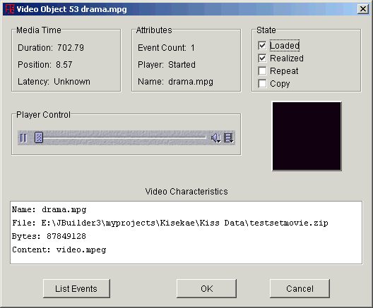
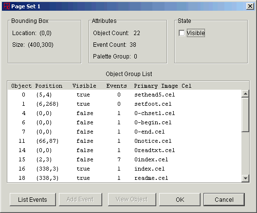
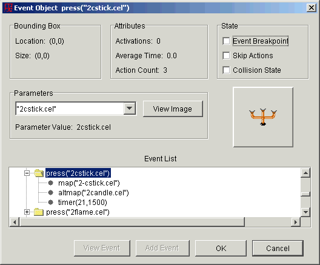

The UltraKiss Object Properties subsystem is a hierarchical system that supports the display of all object properties for any object used within the UltraKiss program. This includes the data set configuration object, all cel and group objects, palette objects, audio and video objects, FKiSS events and action objects, and the FKiSS variable objects.
The Objects Properties subsystem can be invoked in different ways. The Active Objects command on the UltraKiss View program menu is the direct entry into this subsystem. The Properties menu command available on the File menu of most Kisekae tools will also display the characteristics for the current object of interest. The contextual popup menu for any visible object on the screen can be used to invoke the properties dialog for the chosen object.
Property screens generally have a consistent format and structure. The screen usually has three sections. The top section displays various fixed attributes and characteristics of the object. The middle section identifies visual characteristics of the object, provides controls to manipulate the object, or shows other objects related to the object in a parent relationship. The lower section provides either a free form textual description of the object or shows various objects related to the object in a child relationship.
All data set objects can be examined through the View-Active Objects command on the UltraKiss program menu. This screen lists all objects defined for the current data set configuration. Objects can be selected and viewed by expanding the list tree entries and either double clicking on a specific object or pressing the View Object button.
Figure 1
The Configuration Properties dialog displays the current attributes of the active data set configuration. This screen is invoked from the File Properties command on the UltraKiss program menu or by selecting Properties for the configuration object shown in the View Active Objects dialog (see Figure 1).
The configuration object properties show the number of cels, groups, palettes, page sets, events, and variables associated with the configuration. The width and height of the visible window area is shown, as is the border color value for the area outside of the visible panel window. The border color is either an index into the first palette file defined in the configuration or an RGB value of a specific color.
Configuration objects are writable. The updated flag is set if the configuration has been edited or modified since loaded.

Figure 2.
The View Objects button will invoke the data set objects dialog as seen in Figure 1. The Active Configuration button will invoke the Text Editor tool to examine or edit the current configuration file contents.
The List Events button will display the event list in the text window for all FKiSS events defined in this configuration. The event list is a hierarchical tree that lists all events and defined actions for each event. Figure 3 shows a configuration object event list display.

Figure 3.
From the Event List display either events or actions may be selected. The View Event button or View Action button shows the object properties for the selected event or action object. Figure 8 and Figure 9 describe the dialog display for events and actions respectively.
The List Text button will show the configuration object textual characteristics as seen in Figure 2.
Audio objects are created when sound files of type AU, WAV, MIDI, AIFF, RMF or MP3 files are referenced through FKiSS sound or music action commands. Audio objects have a time duration in seconds, a time position, and a latency time before the sound commences. These attributes are characteristics of the sound file. A media player is used to play the sound file. The player, if realized, has been loaded in preparation to play a sound file. The player can be in a stopped, started, or prefetched state. A prefetched player has read the initial section of the sound file in preparation to play the sound.

Figure 4.
If a player has been realized then it can be controlled. The Player control as shown in Figure 4 can be used to start, stop, or position the audio file as required. If the player has not yet been realized then a Play button will be seen rather than the player control. Pressing the Play button will realize the player and start the audio playback.
Video objects are image cels created when movie files of type MPG, AVI, or other supported video format files are referenced on configuration cel lines. Video objects are a type of image cel. Video objects have a time duration in seconds, a time position, and a latency time before the movie commences. These attributes are characteristics of the movie file. A media player is used to play the movie file. The player, if realized, has been loaded in preparation to play the movie. The player can be in a stopped, started, or prefetched state. A prefetched player has read the initial section of the video file in preparation to play the movie. The image cel is visible if the movie is playing.

Figure 5.
If a player has been realized then it can be controlled. The Player control as shown in Figure 5 can be used to start, stop, or position the movie as required. If the player has not yet been realized then a Play button will be seen rather than the player control. Pressing the Play button will realize the player and start the movie playback. The movie will play in the preview window.
Image cel objects are graphic objects that are displayed on the screen. Cel objects have a rectangular bounding area that defines their size and location on the screen. Cels can have a location offset, thus the actual bounding box that defines where the cel is drawn depends on both the cel location and its offset.
Image cels can be transparent or opaque. A transparency value of 255 indicates that the cel is completely opaque. A value of 0 is fully transparent. The transparency value is a specific transparency that is applied to every pixel within the image. The transparency value is initially set with the %t tag attribute read from the configuration file.
Image cels, if visible, are drawn. Cel visibility is changed with FKiSS map and unmap action commands. Ghosted cels are drawn if visible but cannot be selected with the mouse. The ghost attribute is initially set with the %g tag attribute read from the configuration file, or through the FKiSS ghost action command.
Truecolor cels do not have palettes. Every pixel in a truecolor image is defined with its own 32 bit RGB color value. Truecolor cels are also known as CherryKiss cels.
Images are copied if the same cel is used in more than one object group in the active configuration. The copy state attribute indicates that the image cel object shares its base image with another object in the configuration.
The flex attribute shows the initial cel sticky value read from the configuration file. This attribute is used to establish the group object fix value used to limit the group object movement. The group object flex value is set to the maximum value of all cels in the group.
The frames attribute shows the number of individual image frames contained within this cel. Animated cels, such as GIF images can contain multiple frames.

Figure 6.
A image cel can be associated with many different object groups. The object group drop down box lists all groups that reference this cel. If a different group is selected the object property attributes will change to show the image state as it appears within the new group. The View Object button will invoke the object group properties dialog as shown in Figure 7 for the selected group.
If the Edit Palette button is pressed the Color Editor tool is invoked to examine or change the image colors.
The context preview window show an image of the image as it appears in the current object group. A portion of the image can be selected and magnified if the left mouse button is held down and a rectangular selection box is drawn in the preview window. Pressing the right mouse button will restore the image to its normal size.
Image cels can have FKiSS events attached to them. The List Events button will display the event list in the text window for all FKiSS events defined for this cel. The event list is a hierarchical tree that lists all events and defined actions for each event. Figure 3 shows an event list display from which event and action objects can be selected.
Cel Group objects are a recent FKiSS 4 extension used to group image cels into various classes. Cel groups are a way for the programmer to direct FKiSS actions to a class of image cels, rather than an object group. Cel groups have a rectangular bounding area that defines the total area for all cels within the group. Cel groups have a location offset equal to the minimum location offset for all image cels. The group bounding box defines where a cel group object is drawn and depends on both the group location and its offset.
The cel group attributes show the number of cels contained within the group and the number of FKiSS events associated with the group.
The state attributes show the characteristics of the group. The Visible group attribute is not used..

Figure 7.
An cel group can be associated with many different image cels. The image cel list display shows the characteristics for all cels in the group. If a cel entry is selected and the View Image button is pressed, the image cel properties for the image will be shown (see Figure 5).
Cel groups have FKiSS events. The List Events button will display the event list in the text window for all FKiSS events related to this group. The event list is a hierarchical tree that lists all events and defined actions for each event. Figure 3 shows an event list display from which event and action objects can be selected.
Group objects contain one or more image cels. Object groups have a rectangular bounding area that defines the total area for all cels within the group. Groups have a location offset equal to the minimum location offset for all group cels. The group bounding box defines where the object group is drawn and depends on both the group location and its offset.
The object group attributes show the number of cels contained within the group and the number of FKiSS events associated with the group. The lock value attribute indicates if the object group can be dragged with the mouse.
The state attributes show the characteristics of the group. Visible groups can be drawn. Constrained groups cannot be moved outside of the panel area window. Group movement is always constrained during an FKiSS move action unless the unconstrain movement parameter flag is set. Group movement is never constrained during mouse dragging unless the Limit Moves program option has been set.
The unfix transition state is set upon a change in the group object fix state from sticky (non-zero) to mobile (zero). This state attribute is used to recognize unfix event actions.

Figure 8.
An object group can be associated with many different page sets. The page set drop down box lists all pages that reference this group. If a different page set is selected the object group property attributes will change to show the group state as it appears within the new page set. The View Page Set button will invoke the page set object properties dialog as shown in Figure 9 for the selected page set.
The image preview window show a picture of the group as it appears in the current page. A portion of the image can be selected and magnified if the left mouse button is held down and a rectangular selection box is drawn in the preview image. Pressing the right mouse button will restore the image to its normal size.
The image cel list display shows the characteristics for all cels associated with this group. If a cel entry is selected and the View Image button is pressed, the image cel properties for the image will be shown (see Figure 5).
Object groups can have FKiSS events attached to them. The List Events button will display the event list in the text window for all FKiSS events defined for this group. The event list is a hierarchical tree that lists all events and defined actions for each event. Figure 3 shows an event list display from which event and action objects can be selected.
Each page set within the active configuration can contain one or more object groups. The page set object properties is used to list all object groups on the page and all FKiSS events associated with these groups.
Page sets are always located at location (0,0) and span the full size of the configuration panel area. The page set object properties will show the number of object groups and events associated with the page.
Page sets are associated with a specific palette group. This value is defined in the configuration file where the page set definitions occur. All KiSS image cels on this page set will be drawn with the palette group colors for the specified palette group.
A page set is visible if it is the current page set being displayed by UltraKiss.

Figure 9.
The object group list shows the characteristics for all object groups associated with this page. If a group entry is selected and the View Object button is pressed, the group properties dialog for the group will be shown (see Figure 8).
The List Events button will display the event list in the text window for all FKiSS events defined on this page. The event list is a hierarchical tree that lists all events and defined actions for each event. Figure 3 shows an event list display from which event and action objects can be selected.
Events are defined by FKiSS commands. Each event can contain many FKiSS action commands. Events have parameters and the event object property dialog enables the viewing of parameter properties.
An event, when processed, can update the screen. For example, actions associated with a mouse press event may move objects on the screen or modify the display in some way. When all actions actions associated with an event have been processed the event bounding box defines the location and size of the screen area that needs to be redrawn. The event bounding area is the union of all event action screen updates.
The event object attributes shows the number of activations of this event and the average elapsed activation time in seconds. These statistics may be useful for performance tuning. The count of the action commands attached to the event is a measure of the event size.
The event breakpoint state, if set, is used to interrupt event processing when this event is fired. The program debug module is invoked to facilitate event action command debugging.
The skip actions state is set if action commands are being skipped due to a conditional statement failure. This could occur during if-else-endif action command processing.
The collision state is set if objects are moved on the screen and a collision event is associated with the moving object. This state is used to determine if an FKiSS collision event needs to be fired.

Figure 10.
The Parameters list shows all parameters associated with the event. Parameters may be of any object or variable types. The actual parameter object type is identified and the object image is displayed in the context preview window. A portion of the image can be selected and magnified if the left mouse button is held down and a rectangular selection box is drawn in the preview image. Pressing the right mouse button will restore the image to its normal size.
The View Image button in Figure 10 is an example of a contextual button used to show the properties for the event parameter object. This button may show an object group or an image cel object or some other object in the active configuration.
From the Event List display either events or actions may be selected. The View Event button or View Action button shows the object properties for the selected event or action object. Figure 11 and Figure 12 describe the dialog display for events and actions respectively.
Actions are defined by FKiSS commands. Each action is one FKiSS command. Actions have parameters and the action object property dialog enables viewing of parameter object properties.
An action, when processed, can update the screen. For example, actions associated with object movements may modify the display in some way. The action bounding box reflects only the area of the screen that need to be updated for the specific action. When all actions actions associated with an event have been processed the event bounding box describes the total screen area that needs to be redrawn.
The action breakpoint, if set, is used to interrupt event processing when this action is processed. The program debug module is invoked to facilitate event action command debugging.

Figure 11.
The Parameters list shows all parameters associated with the action. Parameters may be of any object or variable types. The actual parameter object type is identified and the object image is displayed in the context preview window. A portion of the image can be selected and magnified if the left mouse button is held down and a rectangular selection box is drawn in the preview image. Pressing the right mouse button will restore the image to its normal size.
The View Audio button in Figure 11 is an example of a contextual button used to show the properties for the event parameter object. This button may show an object group or an image cel object or some other object in the active configuration.
From the Event List display either events or actions may be selected. The View Event button or View Action button shows the object properties for the selected event or action object. Figure 11 and Figure 12 describe the dialog display for events and actions respectively.
Palette objects apply to one or more image cels. Palette objects may contain multiple color palettes known as palette groups. A palette is a set of colors. Images that use palettes reference the colors in the palette by their index value. Every image pixel is an index into the color palette.
Certain colors can be set as the palette transparent color or background color. The background color is used to set the page background before any image is drawn. If an image pixel refers to the transparent color then this pixel is transparent. Anything underneath the image will show through. Thus, if there is nothing beneath an image other than the background, then the background color will show for all transparent pixels.

Figure 12.
The palette group drop down box lists all palette groups defined for the palette. The preview window shows the palette group colors. If a new palette group is selected the preview window colors will change.
The Edit Palette button can be used to invoke the Color Editor tool to change the palette colors.
The List Images button will display a list of all image cels that use this palette. Figure 13 shows an image cel list display.

Figure 13.
To view image cel properties, select a cel from the list and either double click or press the View Image button. This will invoke the Image Object Properties dialog as shown in Figure 5.
The Variable Object Properties shows all FKiSS variables currently defined for the active configuration. The display may be sorted by variable name or value as required, by clicking on the appropriate column.
The variable display is updated every five seconds. Values can change if FKiSS events are being processed while the variable object properties dialog is on display.

Figure 14.
Next Document: Edit Functions
Prior Document: Compatibility Options
Copyright (c) 2002-2023 William Miles